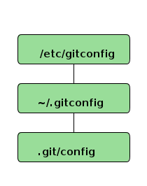

Git's Notes
Table of Contents
1 配置
1.1 git config 配置文件的优先次序（从低到高）

1.2 用户信息
$ git config --global user.name "John Doe"
$ git config --global user.email johndoe@example.com
–global 选项更改的配置文件就是位于你用户主目录下的那个，以后你所有的项目都会默认使用这里配置的用户信息。如果要在某个特定的项目中使用其他名字或者电邮，只要去掉 –global 选项重新配置即可，新的设定保存在当前项目的 .git/config 文件里。
1.3 文本编辑器
$ git config --global core.editor emacs
1.4 差异分析工具
改用 vimdiff：
$ git config --global merge.tool vimdiff
Git 可以理解 kdiff3, tkdiff, meld, xxdiff, emerge, vimdiff, gvimdiff, ecmerge 和 opendiff 等合并工具的输出信息。
1.5 查看配置信息
1.5.1 查看全部的配置信息
$ git config --list
1.5.2 查看某个环境变量的设定，只要把特定的名字跟在后面即可，像这样：
$ git config user.name Scott Chacon
1.6 获取帮助
方法有三：
$ git help <verb> $ git <verb> --help $ man git-<verb>
2 Git基础
2.1 取得项目的 Git 仓库
2.1.1 初始化新仓库
$ git init
2.1.2 添加跟踪文件
$ git add *.c
$ git add README
$ git commit -m 'initial project version'
2.1.3 从现有仓库克隆
$ git clone git://github.com/schacon/grit.git
这会在当前目录下创建一个名为“grit”的目录，其中包含一个 .git 的目录，用于保存下载下来的所有版本记录，然后从中取出最新版本的文件拷贝。
如果希望在克隆的时候，自己定义要新建的项目目录名称，可以在上面的命令末尾指定新的名字:
$ git clone git://github.com/schacon/grit.git mygrit
2.2 记录每次更新到仓库
2.2.1 检查当前文件状态
$ git status
2.2.2 跟踪新文件/暂存已修改文件
$ git add <file> ...
2.2.3 忽略某些文件
可以创建一个名为 .gitignore 的文件，列出要忽略的文件模式。来看一个实际的例子:
$ cat .gitignore *.[oa] *~
文件 .gitignore 的格式规范如下:
- 所有空行或者以注释符号 # 开头的行都会被 Git 忽略。
- 可以使用标准的 glob 模式1匹配。
- 匹配模式最后跟反斜杠(/)说明要忽略的是目录。
- 要忽略指定模式以外的文件或目录，可以在模式前加上惊叹号(!)取反。
2.2.4 查看已暂存和未暂存的更新
git status 的显示比较简单，仅仅是列出了修改过的文件。
如果要查看具体修改了什么地方，可以用 git diff 命令：
$ git diff
此命令比较的是 工作目录中当前文件和暂存区域快照之间的差异 ，也就是修改之后 还没有暂存 起来的变化内容。
若要看 已经暂存 起来的文件和 上次提交 时的快照之间的差异，可以用 git diff –cached 命令 或 git diff –staged 命令，两条命令等效，但后者只在 Git 1.6.1 及更高版本才有。 些。)
$ git diff --cached 或 $ git diff --staged
2.2.5 提交更新
应该养成的习惯：每次准备提交前，先用 git status 看下，是不是都已暂存起来了，然后再运行提交命令 git commit：
$ git commit
几个有用的参数：
- -v： 将修改差异的每一行都包含到注释中来；
- -m <提交说明>： 在一行命令中提交更新；
- -a： 自动把所有已经跟踪过的文件暂存起来一并提交，从而跳过 git add 步骤。
2.2.6 移除文件
$ git rm <file> ...
如果删除之前修改过并且已经放到暂存区域的话，则必须要用强制删除选项 -f (译注:即 force 的首字母)，以防误删除文件后丢失修改的内容。
递归匹配删除文件：
git rm \*~
会递归删除当前目录及其子目录中所有 ~ 结尾的文件，注意 * 号前必须得加上反斜杠，否则不会递归匹配。
2.2.7 仅是从跟踪清单中删除文件
把文件从 Git 仓库中删除(亦即从暂存区域移除)，但仍然希望保留在当前工作目录中。换句话说，仅是从跟踪清单中删除。比如一些大型日志文件或者一堆 .a 编译文件，不小心纳入仓库后，要移除跟踪但不删除文件，以便稍后在 .gitignore 文件中补上，用 –cached 选项即可
$ git rm --cached <file> ...
2.2.8 移动 / 重命名文件
$ git mv file_from file_to
其实，运行 git mv 就相当于运行了下面三条命令:
$ mv README.txt README $ git rm README.txt $ git add README
2.3 查看提交历史
$ git log
2.3.1 常用选项
| 选项 | 说明 |
|---|---|
| -p | 按补丁格式显示每个更新之间的差异。 |
| –stat | 显示每次更新的文件修改统计信息。 |
| –shortstat | 只显示–stat中最后的行数修改添加移除统计。 |
| –name-only | 仅在提交信息后显示已修改的文件清单。 |
| –name-status | 显示新增、修改、删除的文件清单。 |
| –abbrev-commit | 仅显示 SHA-1 的前几个字符，而非所有的40个字符。 |
| –relative-date | 使用较短的相对时间显示(比如，“2 weeks ago" )。 |
| –graph | 显示ASCII图形表示的分支合并历史。 |
| –pretty | 使用其他格式显示历史提交信息。可用的选项包括oneline，short，full，fuller和format(后跟指定格式)。 |
使用–pretty 选项，可以指定使用完全不同于默认格式的方式展示提交历史。比如用 oneline 将每个提交放在一行显示，这在提交数很大时非常有用。可选值包括：
- oneline
- short
- full
- fuller
- format： 可以定制要显示的记录格式，这样的输出便于后期编程提取分析，常用的格式占位符写法及其代表的意义：
选项 说明 %H 提交对象(commit)的完整哈希字串 %h 提交对象的简短哈希字串 %T 树对象(tree)的完整哈希字串 %t 树对象的简短哈希字串 %P 父对象(parent)的完整哈希字串 %p 父对象的简短哈希字串 %an 作者(author)的名字 %ae 作者的电子邮件地址 %ad 作者修订日期(可以用 -date=选项定制格式) %ar 作者修订日期，按多久以前的方式显示 %cn 提交者(committer)的名字 %ce 提交者的电子邮件地址 %cd 提交日期 %cr 提交日期，按多久以前的方式显示 %s 提交说明
2.3.2 限制输出长度
git log 还有许多非常实用的限制输出长度的选项：
| 选项 | 说明 |
| -(n) | 仅显示最近的n条提交 |
| –since，–after | 仅显示指定时间之后的提交。 |
| –until，–before | 仅显示指定时间之前的提交。 |
| –author | 仅显示指定作者相关的提交。 |
| –committer | 仅显示指定提交者相关的提交。 |
示例 查看 Git 仓库中，2008 年 10 月期间，Junio Hamano 提交的但未合并的测试脚本（位于项目的 t/ 目录下的文件）：
$ git log --pretty="%h - %s" --author=gitster --since="2008-10-01" --before="2008-11-01" --no-merges -- t/
2.4 撤销操作
2.4.1 修改最后一次提交
$ git commit --amend
2.4.2 取消已经暂存的文件
$ git reset HEAD <file>...
2.4.3 撤销文件修改
$ git checkout <file> ...
2.5 远程仓库的使用
2.5.1 查看当前的远程库
git remote
如果加上 -v 选项(译注:此为 –verbose 的简写，取首字母)，还可以显示对应的克隆地址：
$ git remote -v
2.5.2 添加远程仓库
$ git remote add [shortname] [url]
2.5.3 从远程仓库抓取数据
$ git fetch [remote-name]
此命令会到远程仓库中拉取所有你本地仓库中还没有的数据。运行完成后，你就可以在本地访问该远程仓库中的所有分支，将其中某个分支合并到本地，或者只是取出某个分支，一探究竟。
如果是克隆了一个仓库，此命令会自动将远程仓库归于 origin 名下。所以，git fetch origin 会抓取从你上次克隆以来别人上传到此远程仓库中的所有更新（或是上次 fetch 以 来别人提交的更新）。有一点很重要，需要记住，fetch 命令只是将远端的数据拉到本地仓库，并不自动合并到当前工作分支，只有当你确实准备好了，才能手工合并。
如果设置了某个分支用于跟踪某个远端仓库的分支(参见下节及第三章的内容)，可以使用 git pull 命令自动抓取数据下来，然后将远端分支自动合并到本地仓库中当前分支。在日常工作中我们经常这么用，既快且好。
2.5.4 推送数据到远程仓库
$ git push [remote-name] [branch-name]
2.5.5 查看远程仓库信息
$ git remote show [remote-name]
2.5.6 远程仓库的删除和重命名
$ git remote rename [remote-name-old] [remote-name-new]
2.5.7 移除对应的远程仓库
$ git remote rm [remote-name]
2.6 标签
Git 使用的标签有两种类型：
- 轻量级的（lightweight）标签：
轻量级标签就像是个不会变化的分支，实际上它就是个指向特定提交对象的引用。
- 含附注的（annotated）标签：
含附注标签，实际上是存储在仓库中的一个独立对象，它有自身的校验和信息，包含着标签的名字，电子邮件地址和日期，以及标签说明，标签本身也允许使用 GNU Privacy Guard (GPG) 来签署或验证。一般我们都建议使用含附注型的标签，以便保留相关信息；当然，如果只是临时性加注标签，或者不需要旁注额外信息，用轻量级标签也没问题。
2.6.1 列显已有的标签
$ git tag
以Git自身项目仓库为例，如果你只对Git仓库的某个系列（例如1.4.2系列）的版本感兴趣，可以运行下列的命令：
$ git tag -l 'v1.4.2.*'
2.6.2 新建标签
- 创建轻量级标签
$ git tag v1.4
- 创建含附注标签
创建一个含附注类型的标签非常简单，用 -a (译注：取 annotated 的首字母)指定标签名字即可：
$ git tag -a v1.4 -m 'my version 1.4'
可以使用 git show 命令查看相应标签的版本信息，并连同显示打标签时的提交对象。
我们可以看到在提交对象信息上面，列出了此标签的提交者和提交时间，以及相应的标签说明。
2.6.3 签署标签
如果你有自己的私钥，还可以用 GPG 来签署标签，只需要把之前的 -a 改为 -s (译注：取 signed 的首字母)即可：
$ git tag -s v1.5 -m 'my signed 1.5 tag'
2.6.4 验证标签
可以使用 git tag -v [tag-name] (译注:取 verify 的首字母)的方式验证已经签署的标签。此命令会调用 GPG 来验证签名，所以你 需要有签署者的公钥 ，存放在 keyring 中，才能验证：
$ git tag -v v1.4.2.1
2.6.5 后期加注标签
你甚至可以在后期对早先的某次提交加注标签。只要在打标签的时候跟上对应提交对象的校验和(或前几位字符)即可：
$ git tag -a v1.2 9fceb02
2.6.6 标签
默认情况下，git push 并不会把标签传送到远端服务器上，只有通过显式命令才能分享标签到远端仓库。其命令格式如同推送分支，运行 git push origin [tagname] 即可：
$ git push origin --tags
2.7 技巧和窍门
2.7.1 自动完成
如果你用的是 Bash shell，可以试试看 Git 提供的自动完成脚本。下载 Git 的源代码，进入 contrib/completion 目录，会看到一个 git-completion.bash 文件。将此文件复制到你自己的用户主目录中(译注:按照下面的示例，还应改名加上点:cp git-completion.bash ~/.git-completion.bash)，并把下面一行内容添加到你的 .bashrc 文件中:
source ~/.git-completion.bash
也可以为系统上所有用户都设置默认使用此脚本。Mac 上将此脚本复制到 opt/local/etc/bashcompletion.d 目录中， Linux 上则复制到 /etc/bashcompletion.d 目录中。这两处目录中的脚本，都会在 Bash 启动时自动加载。 如果在 Windows 上安装了 msysGit，默认使用的 Git Bash 就已经配好了这个自动完成脚本，可以直接使用。
2.7.2 Git 命令别名
Git 并不会推断你输入的几个字符将会是哪条命令，不过如果想偷懒，少敲几个命令的字符，可以用 git config 为命令设置别名。来看看下面的例子:
$ git config --global alias.co checkout $ git config --global alias.br branch $ git config --global alias.ci commit $ git config --global alias.st status
现在，如果要输入 git commit 只需键入 git ci 即可。而随着 Git 使用的深入，会有很多经常要用到的命令，遇到这种情况，不妨建个别名提高效率。 使用这种技术还可以创造出新的命令，比方说取消暂存文件时的输入比较繁琐，可以自己设置一下:
$ git config --global alias.unstage 'reset HEAD --'
这样一来，下面的两条命令完全等同：
$ git unstage fileA $ git reset HEAD fileA
显然，使用别名的方式看起来更清楚。另外，我们还经常设置 last 命令:
$ git config --global alias.last 'log -1 HEAD'
然后要看最后一次的提交信息，就变得简单多了:
$ git last
可以看出，实际上 Git 只是简单地在命令中替换了你设置的别名。不过有时候我们希望运行某个外部命令，而非 Git 的附属工具，这个好办，只需要在命令前加上 ! 就行。如果你自己写了些处理 Git 仓库信息的脚本的话，就可以用这种技术包装起来。作为演示，我们可以设置用 git visual 启动 gitk
$ git config --global alias.visual "!gitk"
3 Git 分支
3.1 创建一个新的分支指针
$ git branch testing
这会在当前 commit 对象上新建一个分支指针。
那么，Git 是如何知道你当前在哪个分支上工作的呢?其实答案也很简单，它保存着一个名为 HEAD 的特别指针。请注意它和你熟知的许多其他版本控制系统(比如 Subversion 或 CVS)里的 HEAD 概念大不相同。在 Git 中，它是一个指向你正在工作中的本地分支的指针 (译注:将 HEAD 想象为当前分支的别名。)。运行 git branch 命令，仅仅是建立了一个新的分支，但不会自动切换到这个分支中去，所以在这个例子中，我们依然还在 master 分支里工作。
创建并切换到到一个名为"hotfix"的分支：
$ git checkout -b hotfix
这相当于执行下面这两条命令：
$ git branch hotfix $ git checkout hotfix
3.2 切换分支
要切换到其他分支，可以执行 git checkout 命令。我们现在转换到新建的 testing 分支:
$ git checkout testing
这样 HEAD 就指向了 testing 分支。
3.3 合并分支
用 git merge 命令来进行合并:
$ git checkout master $ git merge hotfix
3.4 删除分支
使用 git branch 的 -d 选项执行删除操作:
$ git branch -d hotfix
3.5 遇到冲突时的分支合并
任何包含未解决冲突的文件都会以未合并(unmerged)的状态列出。Git 会在有冲突的文件里加入标准的冲突解决标记，可以通过它们来手工定位并解决这些冲突。
解决冲突的办法无非是二者选其一或者由你亲自整合到一起。比如你可以通过把这段内容替换为下面这样来解决。如果你想用一个有图形界面的工具来解决这些问题，不妨运行 git mergetool，它会调用一个可视化的合并工具并引导你解决所有冲突。
退出合并工具以后，Git 会询问你合并是否成功。如果回答是，它会为你把相关文件暂存起来，以表明状态为已解决。之后可以再运行一次 git status 来确认所有冲突都已解决。如果觉得满意了，并且确认所有冲突都已解决，也就是进入了暂存区，就可以用 git commit 来完成这次合并提交。
3.6 分支的管理
3.6.1 查看分支清单
$ git branch iss53 * master testing
注意看 master 分支前的 * 字符:它表示当前所在的分支。也就是说，如果现在提交更 新，master 分支将随着开发进度前移。若要查看各个分支最后一个提交对象的信息，运行 git branch -v:
$ git branch -v
要从该清单中筛选出你已经(或尚未)与当前分支合并的分支，可以用 –merge 和 –no-merged 选项(Git 1.5.6 以上版本)。
4 comment模板
tpope.net 的 Tim Pope 原创的提交说明格式模版
本次更新的简要描述(50 个字符以内) 如果必要，此处展开详尽阐述。段落宽度限定在 72 个字符以内。 某些情况下，第一行的简要描述将用作邮件标题，其余部分作为邮件正文。 其间的空行是必要的，以区分两者(当然没有正文另当别论)。 如果并在一起，rebase 这样的工具就可能会迷惑。 另起空行后，再进一步补充其他说明。 - 可以使用这样的条目列举式。 - 一般以单个空格紧跟短划线或者星号作为每项条目的起始符。每个条目间用一空行隔开。 不过这里按自己项目的约定，可以略作变化。
Footnotes:
1 : 所谓的 glob 模式是指 shell 所使用的简化了的正则表达式。
- 星号(*)匹配零个或多个任意字符;
- [abc] 匹配任何一个列在方括号中的字符(这个例子要么匹配一个 a，要么匹配一个 b，要么匹配一个 c);
- 问号(?)只匹配一个任意字符;如果在方括号中使用短划线分隔两个字符，表示所有在这两个字符范围内的都可以匹配(比如 [0-9] 表示匹配所有 0 到 9 的数字)。